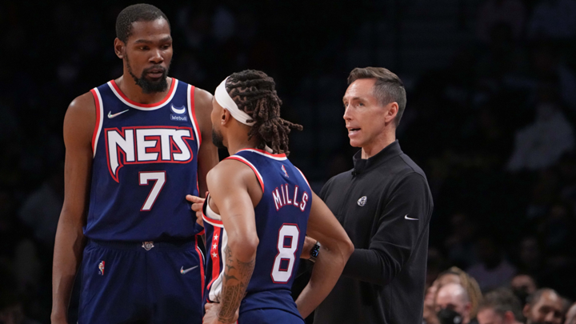

¿Está Brooklyn Nets preparado para ser campeón? Steve Nash cree que todavía falta un largo camino
La contundente derrota a manos de Golden State Warriors ante su público (117-99) expuso las dificultades de los neoyorquinos para controlar el tempo defensivo y presentar alternativas cuando Kevin Durant no tiene el día. "No estamos en esa categoría todavía", expresó el técnico de Brooklyn sobre su condición de candidatos.
Hay derrotas que sirven como punto de inflexión y la experimentada por Brooklyn Nets a manos de Golden State Warriors (117-99) puede ser una de esas. Los de Steve Nash no estuvieron a la altura del reto que tenían delante, siendo incapaces de mantener la consistencia e igualar el nivel defensivo contra un Stephen Curry absolutamente inspirado, que se fue a 37 puntos con un acierto del 63% en tiros de campo en menos de 30 minutos de juego. Una mala actuación en lo ofensivo de Kevin Durant, quien se quedó en 19 puntos con un 31,6%, el nulo aporte del banco y de secundarios importantes como Patty Mills (9 tantos) acabó conduciendo a los de Steve Nash a la derrota.
Antes del arranque de este curso y con lo visto la pasada campaña como referencia, todo el mundo tenía en sus predicciones a los Nets como uno de los principales favoritos a hacerse con el campeonato, incluso aunque Kyrie Irving no disputase un solo minuto. La falta de profundidad, el bajo rendimiento de la segunda unidad y el estado físico de James Harden han marcado el día a día de Brooklyn, que con este encuentro se colocaa en 3ª posición del Este con un balance de 10-5. Un registro más positivo de lo que las sensaciones indican al ver jugar a los neoyorquinos, que han pasado de tener el mejor registro ofensivo de la historia (117,3) a ser el 17º en cuanto a ratio de ataque en lo que llevamos de campaña (107,2).
De hecho, los Nets acumulan en estos primeros compases de temporada un registro de 2-4 contra equipos por encima del 50% de victorias, un dato esclarecedor sobre el nivel al que se encuentran los de Steve Nash ahora mismo.
Preguntado el técnico canadiense sobre si Brooklyn está ahora mismo al nivel para ser considerado candidato al campeonato, Nash lo tuvo claro. "Creo que no estamos todavía en esa categoría. Tenemos mucho trabajo que hacer. Estamos tratando de mejorar como grupo, desarrollarnos y que con suerte podamos encontrar la manera de sobreponernos a nuestras deficiencias al final del año", destacó el entrenador de segundo año. "Es algo que lleva tiempo. Empezamos el año con un plan continuista respecto al curso anterior que hemos tenido que tirar a la basura por el hecho de que Kyrie Irving no ha vuelto, así que estamos intentando construir desde ahí y encontrar el modo".
Todos los inconvenientes que están protagonizando la temporada de los Nets no están poniendo fácil a estos poder mantener cierta consistencia y acercarse a ser el equipo que desearían. Un proceso largo y complicado en medio de una temporada que no les dará un solo respiro.
"El objetivo es ser el mejor equipo posible al final de la temporada, en los Playoffs. Ese es el objetivo. Pero probablemente no lo estemos. Probablemente no estemos ni cerca", reconoció James Harden. "Pero es una temporada larga para mejorar y seguiremos mejorando. Solo estamos tratando de mejorar en cada partido". "Todo es parte del viaje y la comprensión del nivel que debes tener en cada posesión. Esta fue una gran prueba para nosotros", añadió Kevin Durant.
No obstante, sí es cierto que hay brotes verdes a los que agarrarse con respecto a la mejora y desarrollo de los Nets como puede ser la defensa, la cual está siendo uno de los puntos más notables en el crecimiento del equipo. Si el pasado curso fueron la 9ª peor defensa con 113,1 de ratio defensivo, en este inicio se han ubicado en la parte alta de la tabla como la 9ª mejor, firmando un 104,1. Un paso adelante más que destacable sin contar con un interior clásico y simplemente añadiendo figuras de experiencia al banco.
"Creo que los chicos han sido geniales en lo que respecta a aceptar lo que queremos hacer en defensa", destacó Nash. "Nadie nos hubiera elegido como una defensa que pudiese estar entre los 10 primeros al comenzar el curso, y estamos defendiendo, estamos encontrando un camino. Creo que ofensivamente tenemos todas estas alineaciones diferentes, diferentes orígenes, estilos de juego, 10 nuevos jugadores de nuestro equipo. Se necesita tiempo".
Tiempo es justo lo que necesita Brooklyn para alcanzar el reto de ser un candidato al anillo con todos sus condicionantes y sin visos de poder realizar cambios en el plantel debido a su situación salarial.
"Tenemos que encontrar nuestra identidad", continuó Harden. "Todavía somos un equipo nuevo, así que todavía tenemos que descubrir en qué somos buenos, en qué podemos ser buenos, y va a llevar un tiempo largo. Pero qué llevamos, ¿14, 15 partidos? Así que el encuentro de esta noche no nos afecta en absoluto. No creo que nadie se conozca bien. Tal vez los Warriors, porque han estado juntos durante mucho tiempo".